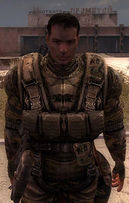

Дегтярьов
Хто це?
Mайор Олександр Олександрович Дегтярьов — головний герой «S.T.A.L.K.E.R.: Поклик Прип’яті» та другорядний
персонаж «S.T.A.L.K.E.R. 2: Серце Чорнобиля».
У 2012 році, під час подій гри «S.T.A.L.K.E.R.: Поклик Прип’яті», він діяв у Зоні відчуження під прикриттям
сталкера для виконання секретної місії з’ясування причин провалу операції «Фарватор». Дегтярьов відзначався
високим рівнем бойової підготовки та здатністю ефективно орієнтуватися у складних ситуаціях, що дозволяло
йому успішно виконати завдання та впливати на перебіг подій у Зоні.
Через роки після подій гри він стає лідером власного угруповання «Корпус», яке активно діє у Зоні у
«S.T.A.L.K.E.R. 2: Серце Чорнобиля», контролюючи проходи до Прип’яті та впливаючи на розподіл сил у регіоні.
Передісторія
Олександр Олександрович Дегтярьов народився у Прип'яті у червні 1978-го року, проте був змушений евакуюватися
та залишити рідне місто у віці семи років через аварію на ЧАЕС . Після Другого Вибуху він знову повернувся до
Зони та набрався досвіду у сталкерстві , що згодом допомогло йому стати співробітником СБУ під прикриттям.
Після провалу військової операції "Фарватер" , метою якої була повторна (після операції "Моноліт" ) спроба захоплення
ЧАЕС , Дегтярьова під прикриттям направили до Зони для з'ясування причин провалу операції. На жаль, зв'язок із
центром зникає і майору доводиться діяти поодинці. На час перебування в Зоні майор має чітко поставлене завдання:
знайти і оглянути вертольоти, що зазнали краху , і з'ясувати долю їхніх екіпажів. Дігтярьов справляється зі своїм
завданням і після подій гри його заохочують позачерговим званням полковника. Після цього він відмовляється від
запропонованої йому штабної посади та йде до Зони постійним спостерігачем від СБУ.
Дегтярьов в різних частинах S.T.A.L.K.E.R.
Дегтярьов в «S.T.A.L.K.E.R.: Поклик Прип'яті»
Після провалу операції «Фарватер», метою якої було встановлення контролю над ЧАЕС, Дегтярьов відправляється в Центр Зони під прикриттям вільного найманця. Його офіційна легенда — пошук причин падіння п'яти військових гелікоптерів типу «Скат».

Дегтярьов в «S.T.A.L.K.E.R.: Серце Чорнобиля»
Вперше з полковником Дегтярьовим Скіф стикається в Прип'яті після перемоги над монолітовцями біля будівлі ДК Енергетик . Полковник подякує Скіфу за допомогу в обороні будівлі та поцікавиться, що йому потрібно. Скіф відповість, що шукає інформацію про Фундамент. Якщо Скіф допомагає «Варті» або «Іскрі» , то Дегтярьов відмовиться допомагати і спробує відмовити Скіфа від пошуку входу до Фундаменту, після чого більше ніколи не з'явиться за сюжетом. Якщо Скіф допомагає Стрільцю , то Дегтярьов вкаже на місця, де можна знайти інформацію про Фундамент. Якщо головний герой допомагає Стрільцю , то у Фундаменті, перед приміщенням з моніторами він зустріне групу корпусівців на чолі з полковником Дегтярьовим. Вони увірвуться до кімнати і стануть свідками дискусії між Коршуновим та Даліном про Візіографа . У ході суперечки з Коршуновим Далін розблокує двері в зал і корпусівці, увійшовши до зали, почнуть бій із бійцями «Варти», в якому Скіф боротиметься проти полковника Коршунова, а Дегтярьов візьме на себе решту солдатів. Коли Коршунов почне долати Скіфа, то в останній момент Дегтярьов прийде на допомогу сталкеру, відволікаючи Коршунова на себе. У ході боротьби Коршунов, завдяки своєму екзоскелету, зможе приголомшити Дегтярьова, але виграний час дозволяє Скіфу вбити голову «Варти» пострілом у голову. Після вибуху енергоустановки Скіф втрачає свідомість. Дегтярьов, що прийшов до тями, на собі принесе сталкера в ДК «Енергетик» . До того, як Скіф прийде до тями, Дегтярьов «відправиться в місто, на розвідку», як стане відомо зі слів Ріхтера. При цьому полковник залишить Скіфу як подарунок свій унікальний автомат на базі автомата Дніпро під назвою «Сотник» .